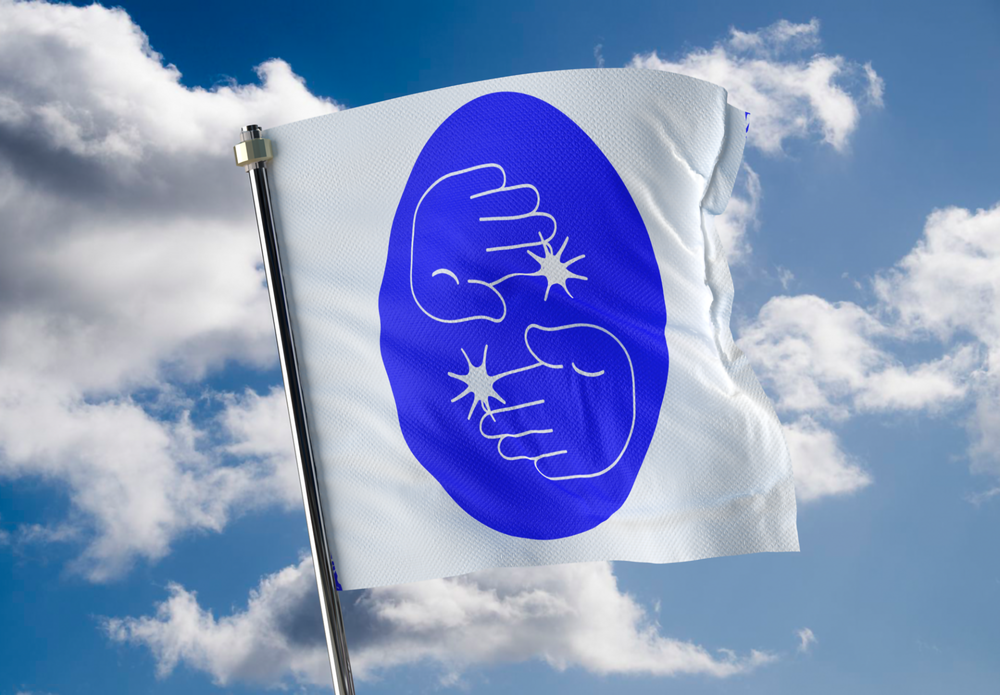
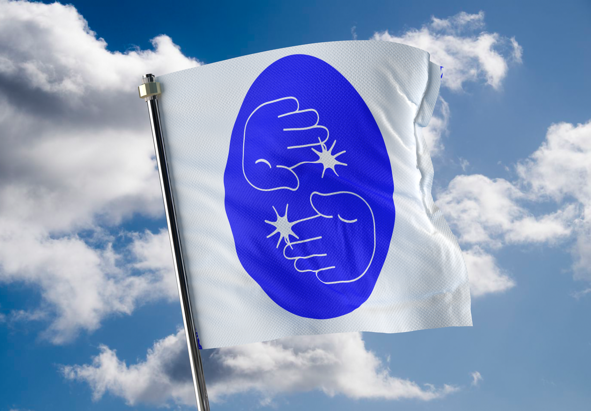

Covid Flags
2024 | Dublin City Council
The brief for this project was to design a flag to be displayed along The River Liffey that would encourage the public to adhere to public health advice amid the Covid-19 pandemic. It was vital that the flag design maintain a positive message and be visually striking. My research centered on the AIDS crisis, and I found an academic that encouraged patients to draw their lived experience. While some were dark and disturbing, others had a bright sense of optimism. Using these themes I narrowed down my designs into a mixture of traditional and more expressive designs. This was the final design selected by Dublin City Council, two copies were made, both are printed on 2m by 2m fabric and displayed outside the Dublin City Council offices.
 
